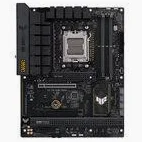
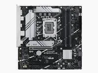
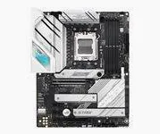

ATX

La carte mère est l’élément principal de l’ordinateur. Elle permet de connecter et d’alimenter tous les composants entre eux comme le processeur, la mémoire RAM, la carte graphique et le stockage.


